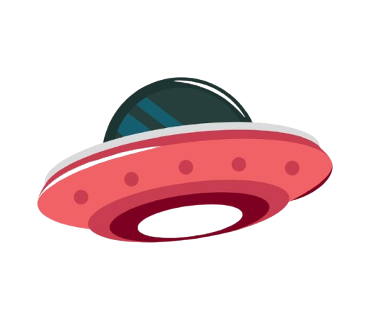

UFO Sightings in Canada
A Data-Driven Analysis of Sightings Across Canada
As Canada launches its Sky Canada Project, what does decades of civilian data reveal?
But what do we already know?
Using data from NUFORC, this project explores when, where, and how sightings happen in Canada.
This analysis of 4,000+ Canadian NUFORC reports uncovers:
- Hotspot provinces with unusual activity patterns
- Decades-long waves tied to cultural moments
- Strange consistencies in witness descriptions
With official investigations now beginning, does the civilian data point to real phenomena... or reflect our collective imagination? Explore what Canadians have actually been reporting since 1974.
As Canada prepares to investigate UAPs, this is what the data reveals.
What is NUFORC?
NUFORC (National UFO Reporting Center) has collected over 180,000 UFO reports since the 1970s.
Before 1995, reports were taken via telephone hotline & mail. Since then, its website has been the primary way people report sightings.
This ensures the data analyzed in this project comes from public reports spanning decades.
üìà Sightings Over Time
Press "Play" to watch sightings increase and decrease over the years. Pause anytime to explore spikes and dips.
üïí When Do UFOs Appear?
Click "Play" to watch sightings change by the hour. Pause and drag the clock hand to explore different times. Toggle seasons to see if UFOs are more common in summer or winter.
12 AM

Sightings for this hour: 392 (High)
See how sighting patterns change over time!
Zone Thresholds
üó∫Ô∏è Where Do UFOs Appear?
Are UFOs more common in certain places? Or do we just report them where we live?
Key Sightings
Click on a UFO to see report details.
Strength in Numbers? Examining Group vs. Solo Reports
Does having more witnesses make a UFO sighting more believable—or just more influenced? Solo encounters tend to be more detailed, while large groups report stranger phenomena. Why?
Select witnesses and/or ships to see data.
Witness & Ship Sightings Visualization
Select Number of Witnesses (Optional):
Select Number of UFOs (Optional):
üõ∏ Have UFOs Changed?
Explore how UFO shapes have changed over time!
Pick a shape to highlight its trend, use the "Resize UFOs by Frequency" button to scale shapes based on sightings, and select a decade from the dropdown to see how reports evolved

Thank You for Exploring the Unknown
Special Thanks to the NUFORC Organization
Project by The Conspiracy Theorists
Team Member 1
Jana van Heeswyk

Dimitrios Gkiokmema